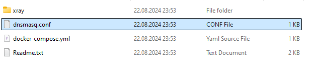
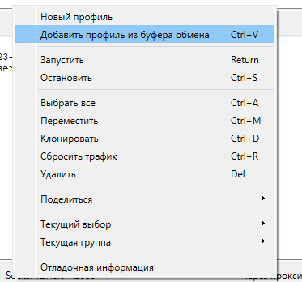
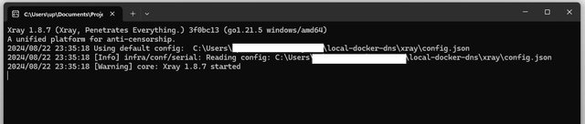
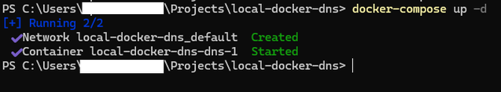
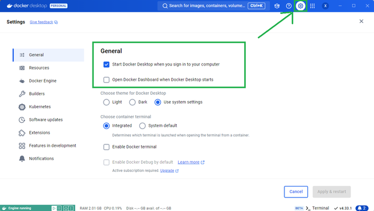

| Ник | Пост | Дата |
|---|---|---|
| xxphantom(Dmitriy) | Идею навеял пост Обход блокировки YouTube для любых Smart TV с GoodbyeDPI + V2ray + MaraDNS который поманил рабочей схемой без покупки нового роутера/приставки, но не захотел нормально работать - DNS сервер капризный (или у меня руки крюки). Естественно лучше сначала прочитать пост и комментарии по ссылке, там есть нюансы, которые я не описывал. Плюс я хотел ютуб сразу направлять в свой VLESS VPN, а не в GoodbyeDPI (хотя его тоже можно использовать) Архив с файлами, о которых я тут рассказываю скачать можно тут. Схема такая же, как по ссылке выше, но есть отличия - в качестве DNS сервера выступает Docker контейнер с dnsmasq, а дальше уже вступает в дело Xray. В первую очередь требуется установить Docker Desktop Далее нужно проверить, какой у вашего ПК ip адрес (его можно посмотреть в настройках сетевого адаптера, либо командой  Не забудьте поменять ip на свой! Далее переходим к настройке конфига Xray: Настраивать и что-то менять тут надо только если хотите перенаправлять с помощью Xray трафик в ваш VPN и у вас он уже есть.
Тут требуется модифицировать под вас Outbound c данными вашего VLESS VPN: Вот эту часть надо подменить под ваши параметры (тут выдуманные данные): Этот блок можно достать из экспорта конфига xray в программе Nekoray, он будет минифицирован, можно отформатировать например тут, там же можно будет проверить итоговый конфиг на валидность. Там выгружается весь конфиг, найдите в нем нужный outbound такого же формата, что я привел выше. Естественно, что перед тем как его оттуда экспортировать, надо его туда импортировать (для этого вам нужно иметь ссылку вида vless://  Важно! По умолчанию конфиг не использует outbound “proxy”, который описан выше, и все гонит через вашего провайдера. Это сделано для упрощения - если у вас нет своего VPN или вы не хотите с этим возиться, просто отправляете трафик напрямую, а дальше уже запускаете на ПК сторонний VPN или GoodbyeDPI. Но если вы решите использовать его и пропишите в конфиге Xray свой VPN, то надо будет “direct” поменять на “proxy” в роутинге, причем я на скриншоте показал, где прописывать “proxy” если нужно через VPN пускать только ютуб, и где если все остальное тоже хотите через VPN. Убедитесь, что конфиг содержит все скобки и нужное кол-во запятых в нужных местах. Окей, Xray настроили, при запуске он выводит нечто такое (может чуть отличаться в зависимости от настроек уровня логирования):  Далее запускаем всё это добро. Заранее положите папку local-docker-dns в такое место, в котором она не будет вам мешать, если оставить надолго. Запустите терминал в директории local-docker-dns. Это можно сделать так - правой кнопкой мыши внутри нужной папки и там выбрать пункт “Открыть терминал”. Либо Win + R, введите cmd а далее команда c путем до папки (поменяйте на ваш путь) “cd C:\Users\User\Documents\local-docker-dns” В терминале запускаем наш докер контейнер с локальным DNS сервером:
 Далее запускаем xray:
Теперь осталось указать свой ip в качестве DNS сервера в настройках сети телевизора. Docker можно настроить так, чтобы он загружался вместе с системой:  Ярлык на xray.exe можно закинуть в автозагрузку: Нажмите Win+R, введите “shell:startup” и нажмите Enter. | 2024-08-22T22:12:08.478Z |
| Igor | Добрый день, подскажите совместим ли ваш метод и метод описанный в теме https://ntc.party/t/обход-блокировки-youtube-для-любых-smart-tv-с-goodbyedpi-v2ray-maradns/9415 с уже настроенным обходом блокировки через Антизапрет по теме https://ntc.party/t/обход-блокировок-в-россии-через-антизапрет-на-прошивке-keenetic/7768? Сделал все по вашей инструкции, настройку Xray пропустил, так как решил через goodbyedpi на компьютере все пропускать. Запускаю Stube на телевизоре, выбираю видео, и начинается очень долгое ожидание (около 2 минут) после чего видео запускается, но бывает, что вылезает ошибка при запуске видео. | 2024-08-24T13:51:48.117Z |
| dartraiden(Alexander Gavrilov) | Судя по описанию - вряд ли. На Keenetic лучше поднять nfqws | 2024-08-24T14:00:13.472Z |
| Igor | у меня Keenetic giga 1010, я правильно понимаю, что в этом случае мне не нужен будет настроенный антизапрет, так как он включен в скрипт nfqws? | 2024-08-24T14:31:54.920Z |
| dartraiden(Alexander Gavrilov) | Если сможете подобрать такие настройки, которые помогали бы не только с замедлением ютуба, но и с блокировками сайтов. Либо связка АнтиЗапрет + nfqws чисто для ютуба | 2024-08-24T15:01:37.496Z |
| Igor | А есть инструкция как подружить АнтиЗапрет и nfqws? | 2024-08-24T15:45:52.839Z |
| dartraiden(Alexander Gavrilov) | Да, вроде, ничего не надо, настроить и то, и другое по инструкцции, да и всё. | 2024-08-24T16:34:02.739Z |
| Fumo | Вроде настроил, но столкнулся с такой проблемой, что без добавления --fake-gen любого значения goodbyedpi не работает, а с ним ни приложение, ни сайт на ТВ не загружаются. | 2024-10-07T14:44:20.097Z |
{kind=link}
{kind=link}